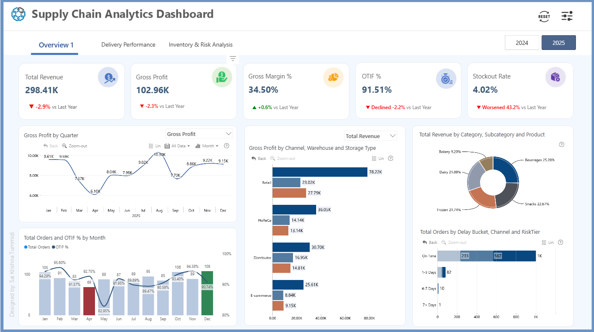
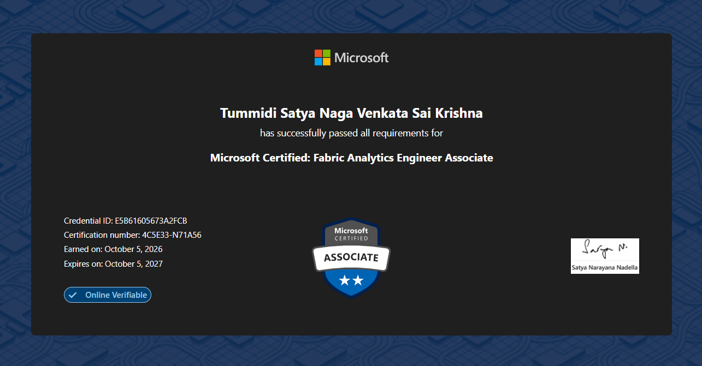
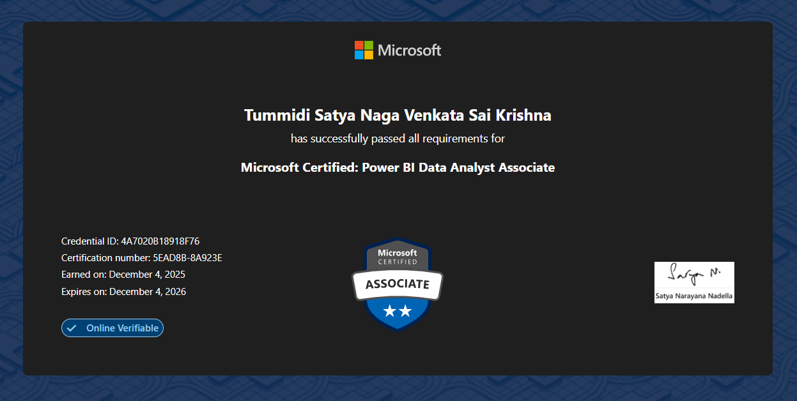
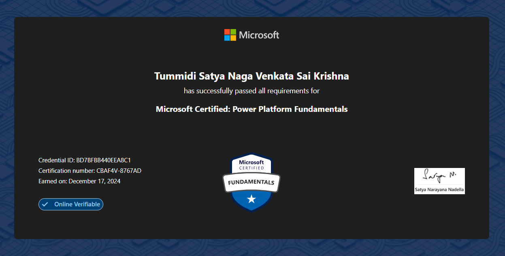

Power BI & Data Analytics
End-to-end BI development, data preparation, modeling and analytics.
POWER BI DEVELOPER • DATA ANALYST
I build interactive Power BI reports and dashboards, transform complex data into actionable insights, and work closely with stakeholders to deliver reliable, business-focused analytics solutions.
End-to-end BI development, data preparation, modeling and analytics.
Low-code business applications and connected data solutions.
Modern analytics concepts across the Microsoft data ecosystem.
Querying, validation and analytical data preparation.
Supporting analytics workflows with familiar productivity and programming tools.
EXPERIENCE
Techtonica Technologies Private Limited
KPIT Technologies Private Limited
SERVICES
Interactive dashboards, KPI reporting, Security setup, drill-through experiences and executive reporting.
Power Query transformations, data cleaning, relationships, star-schema modeling and validation.
Measures, calculated logic, time intelligence and business-focused analytical calculations.
Publishing, workspaces, dashboards, refresh concepts, sharing and security setup.
Data Source connections, Data Ingestion, Data Management, Lakehouse and Warehouse Architecture.
Canvas app development for lightweight business applications and operational workflows with Power Automate and Power Apps.
SQL querying, data validation and analytical problem solving using relational data.
PROJECTS

BUSINESS INTELLIGENCE
Built an end-to-end Food & Beverage Supply Chain Analytics dashboard in Power BI, using a star schema, Power Query, DAX, and interactive KPI reporting to analyze revenue, profitability, delivery performance, inventory, stockouts, waste, and returns.

Microsoft Fabric ‧ Power BI
Developed an end-to-end food delivery analytics solution using Microsoft Fabric and Power BI, implementing Lakehouse data ingestion, data cleaning and transformation, Data Warehouse loading, and data validation to prepare business-ready data for analytics.

Developed and designed KPI-driven performance analysis to monitor first-response and resolution times against SLAs, agent performance, customer satisfaction, and ticket resolution efficiency, helping identify service bottlenecks and opportunities to improve support operations.

Developed a Ticket Management System using Microsoft Power Apps Canvas Apps and SharePoint Online, enabling centralized ticket creation, tracking, status updates, priority management, and assignment through a user-friendly interface.
EDUCATION
Sasi Institute of Technology and Engineering
2018 - 2022
CGPA: 8.01
CERTIFICATIONS

MICROSOFT
DP-600 • Credential ID: E5B61605673A2FCB • Earned on: October 5, 2026
View Credential ↗
MICROSOFT
PL-300 • Credential ID: 4A7020B18918F76 • Earned on: December 4, 2025
View Credential ↗
MICROSOFT
PL-900 • Credential ID: BD7BFBB440EEA8C1 • Earned on: December 17, 2024
View Credential ↗LET'S CONNECT
I'm open to Power BI, Data Analytics and business intelligence opportunities.